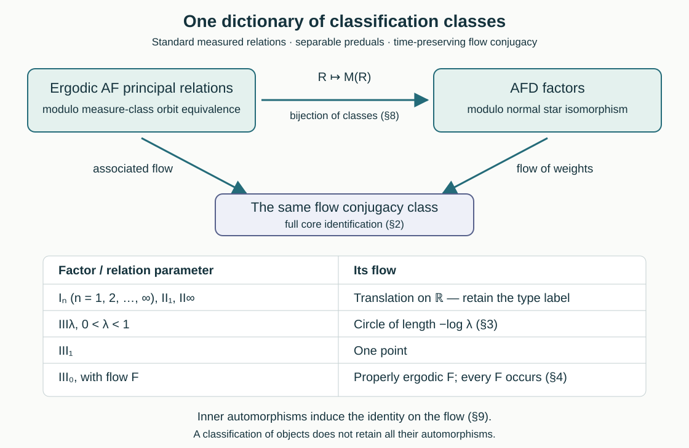

Classification by factors, relations and flows
Written by GPT-6 Astra (OpenAI), Ultra. Original text and editable diagram: CC0.
A measured relation produces a von Neumann algebra, and its Maharam lift produces a flow. For approximately finite-dimensional factors of type III, these constructions give the same classification. The semifinite cases require additional labels. We establish the full dictionary and distinguish classification of objects from preservation of their automorphisms.
1. Objects, maps and the classification parameter
All factors below are nonzero and have separable predual. AFD means approximately finite-dimensional. Relations are countable principal Borel equivalence relations on nonzero standard sigma-finite measure spaces, considered on invariant conull reductions. They are ergodic and hyperfinite. The equivalence with the measured AF convention, including atomic cases, is proved in 1. What finite approximation means and 4. The dyadic criterion and the whole measured model.
An isomorphism of factors is a normal unital star isomorphism. An isomorphism of measured relations is a Borel point bijection between conull reductions, preserving the measure class in both directions and taking precisely the arrows of one relation to those of the other. For actions, this is orbit equivalence of their principal orbit relations; neither the acting group nor its stabilizers are retained. A flow conjugacy preserves the measure class and the real time parameter.
Write \(\mathcal F(M)\) for the dual action on the center of a continuous core, and \(\mathcal A(R)\) for the associated flow of a relation. Define the parameter space
\[ \mathcal P= \{\mathrm I_n:n\in\mathbb N_{\ge1}\cup\{\infty\}\} \sqcup\{\mathrm {II}_1,\mathrm {II}_\infty\} \sqcup(0,1)\sqcup\{*\}\sqcup\mathcal E_0. \tag{1.1} \]Here \(\mathcal E_0\) consists of conjugacy classes of properly ergodic standard measured real flows: no individual orbit is conull. The interval parameter \(\lambda\) will represent type \(\mathrm {III}_\lambda\), and \(*\) type \(\mathrm {III}_1\).
The principal earlier classification proofs are 8. Identify the full normal crossed products through 9. Prove necessity and obtain an abelian integer model and 9. Why the type hypothesis matters for type III zero, Classification as a measured relation and 4. Identifying every injective type IIIλ factor for \(0<\lambda<1\), and 7. Exact normalization and type III₁ uniqueness and 11. The three-factor comparison and uniqueness for type III one. Their hypotheses and proof inputs remain in force. Sections 4–8 below apply these proofs and supply the semifinite and morphism arguments.
2. Orbit transport gives a normal algebra isomorphism
Let \(\phi:X_1\to X_2\) be an isomorphism of measured relations \(R_1,R_2\). Put
\[ f=\frac{d(\phi_*\mu_1)}{d\mu_2}. \tag{2.1} \]The density is finite and strictly positive almost everywhere. Use source-counting measure \(\nu_{s,i}\) on \(R_i\), so that the norm is the integral over the source \(x\) of the sum over targets \(y\sim x\). Define
\[ (J\xi)(\phi y,\phi x)=f(\phi x)^{1/2}\xi(y,x). \tag{2.2} \]For every nonnegative measurable \(g\), \(\int g(\phi x)\,d\mu_1(x)=\int g(z)f(z)\,d\mu_2(z)\). Applying this to the squared fiber norms proves that \(J\) is an isometry. The inverse is the endpoint pullback multiplied by \(f(\phi x)^{-1/2}\), so \(J\) is onto.
For a bounded finite-graph kernel \(a\), left convolution is
\[ (L_a\xi)(y,x)=\sum_{z\sim x}a(y,z)\xi(z,x). \tag{2.3} \]The multiplier in (2.2) depends only on the source \(x\), which stays fixed in this sum. Hence
\[ J L_a J^*=L_{a^\phi},\qquad a^\phi(y',z')=a(\phi^{-1}y',\phi^{-1}z'). \tag{2.4} \]This computation applies to diagonal multipliers and partial-graph operators; these generate the entire relation von Neumann algebra by 1. Counting arrows and fixing the derivative. Conjugation by \(J\), with the displayed inverse, is therefore an onto normal isomorphism \(M(R_1)\cong M(R_2)\). The construction does not assume that \(\phi\) preserves the originally specified measures.
The full core identification 1. The lifted relation and the exact core theorem gives
\[ \mathcal F(M(R))\cong\mathcal A(R). \tag{2.5} \]Normal isomorphisms of factors transport the full core and intertwine its dual action, by CORE, Sections 5–8. Thus both routes from a relation to a flow give the same conjugacy class. Ergodicity makes the relation algebra a factor, and 3. Towers and the correct cyclic boundary through 4. The dyadic criterion and the whole measured model supplies its AFD property.
3. Computing flows from normalized derivative groups
Suppose \(R\) carries an equivalent probability for which its modulus \(\delta(y,x)\) has values in a countable subgroup \(H\subset\mathbb R_+^\times\), its degree-one kernel is ergodic, and every \(h\in H\) occurs on a positive-domain partial graph. These are actual normalization conclusions in CNR and NME, not consequences of value containment alone.
In the logarithmic height coordinate \(q=-\log a\), the Maharam relation joins
\[ (x,q)\quad\hbox{to}\quad (y,q+\log\delta(y,x)). \tag{3.1} \]Indeed 1. The lifted relation and the exact core theorem uses target height \(a_y=\delta(x,y)a_x\). The height measure has the Lebesgue measure class. For a bounded invariant function \(F(x,q)\), Fubini's theorem applied to the countable graphs of the degree-one kernel shows that \(F(\,\cdot\,,q)\) is invariant for almost every \(q\). Kernel ergodicity makes it constant. Its constant value can be chosen measurably as \(g(q)=\int F(x,q)\,d\mu(x)\).
For an occurring degree \(h\), restrict to a positive-domain graph of that degree. Invariance and Fubini give
\[ g(q+\log h)=g(q)\quad\hbox{for almost every }q. \tag{3.2} \]Conversely these identities make \(g(q)\) invariant under every arrow, since the degrees lie in the countable group \(H\). Thus the center of the core is precisely the algebra of essentially bounded functions invariant under translations by \(\log H\).
If \(H=\lambda^{\mathbb Z}\), this algebra is \(L^\infty(\mathbb R/L\mathbb Z)\), where \(L=-\log\lambda>0\): restrict a periodic representative to \([0,L)\), and extend it periodically for the inverse. The dual flow is
\[ (\theta_sg)(q)=g(q-s). \tag{3.3} \]Its exact kernel is \(L\mathbb Z\), since the character \(e^{2\pi iq/L}\) detects every other time. Its period is \(L\), whereas the corresponding periodic modular state has period \(2\pi/L\).
If \(H\) is dense, the algebra is scalar. To justify passing from its countable translations to all translations, convolve \(g\) with a smooth compactly supported approximate identity. Each convolution is continuous, is invariant under the dense subgroup, and hence is constant. These convolutions converge to \(g\) in local \(L^1\); their constants converge on any fixed bounded interval of positive length, so \(g\) is the same constant almost everywhere. The approximate-identity assertion follows by first approximating a bounded function on a compact interval in \(L^1\) by step functions, for which translation continuity and convolution convergence are immediate, and then using the \(L^1\) contraction estimate. The associated flow is consequently the one-point flow.
4. All type III cases
For \(0<\lambda<1\), The relation and the precise proof inputs through Classification as a measured relation normalizes every ergodic AF type \(\mathrm {III}_\lambda\) relation and identifies it with the binary tail relation of probabilities
\[ p_0=\frac1{1+\lambda},\qquad p_1=\frac{\lambda}{1+\lambda}. \tag{4.1} \]Its normalized modulus group is \(\lambda^{\mathbb Z}\), with ergodic kernel and all degrees occurring. Section 3 identifies its flow with the circle of length \(-\log\lambda\). The matrix model in CNR-05 and 2. The specified Powers product through 4. Identifying every injective type IIIλ factor identifies its factor with the Powers factor \(R_\lambda\); UNI-04 proves that every separable AFD factor of that type is isomorphic to it. Different \(\lambda\)'s have different exact circle periods.
For type \(\mathrm {III}_1\), 7. Exact normalization and type III₁ uniqueness uses the common group
\[ H=2^{\mathbb Z}3^{\mathbb Z} \tag{4.2} \]and the three-letter probability proportional to \((1,1/2,1/3)\). It supplies the equivalent probability, ergodic kernel, occurrence of every degree, and a point isomorphism to the common tail relation. The group is dense: an integer relation between \(\log2\) and \(\log3\) would contradict unique prime factorization, and the pigeonhole argument of 3. The full irrational product theorem gives arbitrarily small nonzero elements of its logarithmic group. Section 3 therefore gives the one-point flow. 6. A reference factor and tracial stability and 11. The three-factor comparison and uniqueness give existence and uniqueness of the factor, represented by \(R_{1/2}\overline\otimes R_{1/3}\). Relation uniqueness and factor uniqueness are separate proved inputs.
For type \(\mathrm {III}_0\), 8. Identify the full normal crossed products through 9. Prove necessity and obtain an abelian integer model proves that the properly ergodic flow determines the AFD factor, while 1. The classification statement and its inputs through 9. Why the type hypothesis matters proves that it determines the whole measured relation. 7. An AF principal relation and its factor realizes every such flow by a nonsingular integer transformation with AF principal relation and AFD type \(\mathrm {III}_0\) factor. By (2.5), these realizations give the same parameter on both sides.
Consequently the factor and relation classification classes agree for every type III case, and their common invariant is the flow: respectively a circle, a point, or a properly ergodic flow. No choice of a specified Cartan subalgebra is recovered merely by applying the factor uniqueness theorem; the relation assertion uses OEC, CNR or NME.
5. The semifinite relation models
The complete trace/type criterion 2. An expected diagonal in a type I factor is atomic through 6. Finite projections and the types of diagonal corners says that a semifinite relation factor has an equivalent invariant sigma-finite unit measure. We use that measure here. If the ergodic relation has an atom, nonsingularity and countable saturation give one conull orbit. Its cardinality is \(n\in\mathbb N_{\ge1}\cup\{\infty\}\), and the relation is the full relation on those \(n\) points. The original positive atomic masses do not matter for measure-class isomorphism.
Suppose instead that the measure is nonatomic. Any two equivalent invariant measures differ by a positive invariant density; its rational level sets and ergodicity make that density constant almost everywhere. Thus finite versus infinite total invariant mass is intrinsic to the measure class.
In the finite case normalize the mass to one. The hypotheses of 7. The measured isomorphism and its exact scope hold with \(H=\{1\}\) and \(p=(1/2,1/2)\). The modulus is identically one, its kernel is the whole ergodic relation, and the identity graph realizes its only degree. That theorem gives the uniform binary tail relation, denoted \(R_{\rm prob}\).
For the infinite case choose a measurable partition
\[ X=\bigsqcup_{j\ge0}A_j,\qquad \mu(A_j)=1. \tag{5.1} \]Here is why it exists. A sigma-finite exhaustion gives countably many disjoint finite-measure pieces. The atomless division proof 1. Atomless coordinates and finite weighted patterns cuts each piece according to any prescribed finite or countable list of masses. Lay their masses consecutively along \([0,\infty)\), cut at the integer endpoints, and join pieces assigned to the same unit interval. Their union is (5.1), modulo null sets.
For each \(j\), there is a measure-preserving orbit bijection \(\psi_j:A_0\to A_j\), modulo null sets. To prove this, enumerate a countable partial-graph presentation of \(R\). In sequence, retain every still unused source in \(A_0\) whose image under the current graph is still unused in \(A_j\). The retained graphs have disjoint domains and ranges, and their union preserves measure. If positive remainders survived, ergodicity would give a positive graph piece joining them, contradicting the stage when that graph was considered. Their masses are equal and finite, so neither remainder can survive alone. Take \(\psi_0\) to be the identity.
The map
\[ A_j\ni x\longmapsto(\psi_j^{-1}x,j) \tag{5.2} \]is a measure-preserving isomorphism from \(R\) onto \((R|A_0)\times(\mathbb N\times\mathbb N)\). Both directions follow because \(x\) and \(\psi_j^{-1}x\) are in the same original orbit. Countably many exceptional sets are removed with their saturations. The reduction \(R|A_0\) is ergodic: two positive invariant pieces would again be joined by a positive graph piece. It is hyperfinite by restriction of a finite exhaustion. The probability case therefore identifies it with \(R_{\rm prob}\).
We have obtained exactly one nonatomic finite invariant model and one nonatomic infinite invariant model, in addition to the atomic cardinalities. This argument preserves the original measure class without assuming its originally given measure was invariant.
6. The matching semifinite factors
The atomic relation on \(n\) points gives \(B(\ell^2(n))\), with \(B(\ell^2(n))=M_n(\mathbb C)\) when \(n<\infty\). The complete source-counting matrix-unit proof is 3. A conull orbit is a full matrix algebra.
The uniform binary relation gives the finite hyperfinite factor \(R_{\rm fin}\). Explicitly, the first \(k\) coordinates give matrix units for \(M_{2^k}\), with normalized matrix trace. Their union contains every cylinder diagonal and every prefix-replacement operator, and hence generates the whole relation algebra. The integral diagonal state is a faithful normal trace. Ergodicity gives a factor, and the diffuse diagonal rules out a minimal projection in this finite factor by RFT-02. Its countable amplification is
\[ M\bigl(R_{\rm prob}\times(\mathbb N\times\mathbb N)\bigr) \cong R_{\rm fin}\overline\otimes B(\ell^2\mathbb N). \tag{6.1} \]On source-counting Hilbert spaces the product identification is the tensor-product unitary; products of partial-graph operators and diagonal functions generate both sides. Thus (6.1) is onto and normal.
Conversely every semifinite AFD factor is one of these models. For a type I factor, choose a minimal projection \(e\). A maximal orthogonal family \(e_i\sim e\) sums to one: otherwise projection comparison in a factor supplies another equivalent copy inside the nonzero complement. Separability makes the family finite or countable. Partial isometries \(v_i\), with \(v_i^*v_i=e\) and \(v_iv_i^*=e_i\), give scalar matrix coefficients \(v_i^*xv_j=x_{ij}e\), since \(eMe=\mathbb Ce\). Finite matrix compressions and their strong limits identify the entire algebra normally with \(B(\ell^2(I))\).
A type \(\mathrm {II}_1\) AFD factor is injective by the proved AFD-to-injectivity theorem, and the small-corner uniqueness theorem, Section 4 identifies it with \(R_{\rm fin}\).
For a type \(\mathrm {II}_\infty\) factor choose a faithful normal semifinite trace \(\tau\) and a finite projection \(e\) of trace one, rescaling \(\tau\). We record the projection step needed for amplification. In a diffuse finite corner, repeated halving by projection comparison and halving produces \(2^k\) equivalent pieces at level \(k\). Their traces are the total trace divided by \(2^k\). Nested dyadic selections and normality therefore give a subprojection of every prescribed trace between zero and the corner's trace.
A finite-trace exhaustion of \(1\) exists: semifiniteness makes finite projections have supremum \(1\), and a faithful normal state extracts a sequence whose increasing finite joins converge to \(1\). Its orthogonal increments are finite. Cut these increments, as in the mass construction (5.1), into projections \(e_j\) of trace one with orthogonal sum \(1\). Orthogonal sums of cuts are projections, and normality controls their traces. Trace comparison makes all \(e_j\) equivalent. The matrix coefficients \(v_i^*xv_j\in e_0Me_0\) give
\[ M\cong(e_0Me_0)\overline\otimes B(\ell^2\mathbb N). \tag{6.2} \]This map and its inverse are determined by finite matrix compressions; bounded compression limits give the full normal algebras. Injectivity passes to the finite corner by the preceding injectivity proof. The corner is diffuse and factorial, so the small-corner theorem makes it \(R_{\rm fin}\).
These models are distinct. Atomic versus diffuse, finite versus properly infinite, and the cardinality of a maximal family of minimal projections are preserved by isomorphisms. Thus their parameters are precisely \(\mathrm I_n,\mathrm {II}_1,\mathrm {II}_\infty\), agreeing with Section 5.
7. Why semifinite factors need labels
Let \(N\) be any semifinite factor and let \(\tau\) be a faithful normal semifinite trace. Its modular action is trivial. The regular generators of its core are therefore the commuting copies of \(N\) and the real group von Neumann algebra:
\[ C_\tau(N)=N\overline\otimes VN(\mathbb R) \cong N\overline\otimes L^\infty(\mathbb R). \tag{7.1} \]The Fourier unitary in 2. Why the Fourier, trace and product conventions matter, applied to this trivial action, proves the last normal identification. Choose the spectral coordinate \(q\) so that the group generator \(\lambda(t)\) is multiplication by \(e^{itq}\). The dual action multiplies it by \(e^{-ist}\), hence acts on the center by \(g(q)\mapsto g(q-s)\).
Factoriality gives
\[ Z(C_\tau(N))=1\otimes L^\infty(\mathbb R). \tag{7.2} \]For completeness, slicing a central element by normal functionals on the abelian tensor factor gives elements commuting with all of \(N\), hence scalars. Subtracting the resulting \(1\otimes g\) leaves every normal slice zero, so the element is zero. Normal slices separate the spatial tensor product.
Thus every semifinite factor has the same translation flow, regardless of its type label. In particular \(M_2(\mathbb C)\) and \(M_3(\mathbb C)\) have conjugate flows but are not isomorphic: their complex vector-space dimensions are \(4\) and \(9\). Their full two-point and three-point relations are not orbit equivalent either.
The flow assignment on the complete parameter set (1.1) is consequently
| Parameter | Flow of weights and associated flow |
|---|---|
| \(\mathrm I_n,\ \mathrm {II}_1,\ \mathrm {II}_\infty\) | Translation on \(\mathbb R\) |
| \(0<\lambda<1\) | Translation on \(\mathbb R/(-\log\lambda)\mathbb Z\) |
| \(*\), the type \(\mathrm {III}_1\) case | One point |
| \([F]\in\mathcal E_0\) | \(F\) |
The real-line flow is transitive with no nonzero period; the circle flows have the exact nonzero period groups computed in Section 3; the one-point flow has every time as a period; and a properly ergodic flow has no conull orbit. These properties separate the displayed flow families.
8. The full classification dictionary
Theorem 8.1. At the scope of Section 1, the assignment \(R\mapsto M(R)\) gives a bijection from isomorphism classes of ergodic AF principal measured relations to isomorphism classes of AFD factors. Both class sets are parametrized by \(\mathcal P\). On type III objects, the common parameter is equivalently the conjugacy class of the flow. On semifinite objects, the type label must be retained in addition to the flow.
Proof. The normal construction in Section 2 shows that the assignment is well-defined. Sections 5–6 prove existence and uniqueness for every semifinite label and identify the factor of its relation model. Section 4 does the same for each type III class: the binary model for each \(\lambda\), the common dense-degree model for type III one, and OFR realization for each properly ergodic flow. It proves surjectivity onto factors as well as relations.
For injectivity, isomorphic factors have the same type and conjugate flows. In the semifinite cases their common label gives the same relation model by Section 5. For type \(\mathrm {III}_\lambda\) and type \(\mathrm {III}_1\), CNR and NME give the same relation model. For type \(\mathrm {III}_0\), OEC applied to their conjugate associated flows gives a point isomorphism of the full relations. Thus two relation classes have the same factor class only when they agree.
The factor type alternatives used here are the semifinite alternatives and the type III spectral alternatives. In the programme these are obtained from the trace/type proof RFT and the general type III spectral trichotomy, with its stated all-weight modular prerequisites, and its relation counterpart 6. The diagonal detects the entire Connes spectrum through 8. The spectral alternatives; FWC and its continuous-decomposition inputs identify the III zero flow case. No trace-preserving isomorphism of two arbitrarily prescribed original measures is part of the conclusion. \(\square\)

The solid top arrow is the bijection of classification classes proved in Theorem 8.1. The two downward arrows agree by (2.5). The lower table describes their fibers; all semifinite labels map to the same real-line flow. The diagram concerns classes of objects, not a bijection between their sets of automorphisms.
9. What happens to automorphisms
The natural flow assignment forgets inner automorphisms. The canonical-extension formula proved in Continuous canonical extension to the core gives, for \(u\in\mathcal U(M)\),
\[ \widetilde{\operatorname{Ad}u} =\operatorname{Ad}\pi(u). \tag{9.1} \]Its restriction to \(Z(C(M))\) is the identity. This does not force \(\operatorname{Ad}u\) to be the identity on \(M\).
For an explicit type III example, take the first matrix tensor factor in \(R_\lambda\). Let \(u=e_{00}-e_{11}\) there and let \(a=e_{01}\). Then
\[ uau^*=-a\ne a. \tag{9.2} \]Thus the distinct arrows \(\operatorname{id}\) and \(\operatorname{Ad}u\) in the full isomorphism groupoid of factors have the same image on the flow. The functor is not faithful. The same obstruction occurs in every noncommutative factor: a noncentral projection \(p\) gives \(u=1-2p\); if \(\operatorname{Ad}u\) were the identity, \(u\), and hence \(p\), would be central.
An equivalence of categories must be faithful. Indeed, if a functor \(F\) has a quasi-inverse \(G\) and a natural isomorphism \(\eta:\operatorname{id}\to GF\), then \(F(a)=F(b)\) implies \(GF(a)=GF(b)\); naturality gives \(a=\eta_Y^{-1}GF(a)\eta_X=\eta_Y^{-1}GF(b)\eta_X=b\). Consequently the displayed natural flow assignment cannot be an equivalence of the full categories with all isomorphisms as arrows. Theorem 8.1 is a classification theorem on object classes. It does not assert that every flow conjugacy lifts to a unique factor isomorphism.
Takesaki's Theory of Operator Algebras III, XVIII.2, Remark 2.2, pp.314–315, presents the relation–factor–flow diagram alongside the III zero theorem and the III lambda and III one classification results. The class-level interpretation is given above. If its factor box is read to include semifinite factors, Section 7 supplies the necessary labels. If its categorical wording is read literally with all isomorphisms as arrows, (9.1)–(9.2) supply the obstruction. These are precise mathematical qualifications of the diagram.
10. Five worked problems
1. Which period determines a binary model with probabilities \(4/5,1/5\)?
The derivative generator is \(\lambda=1/4\). The associated flow has period \(\log4\), and its kernel is \((\log4)\mathbb Z\). The corresponding periodic modular state has period \(2\pi/\log4\). The first period determines the circle in Section 3.
2. Does changing positive weights on a three-point full relation change its factor?
No. All such measures have the same null sets. The identity point map is a measure-class isomorphism, and the density in (2.2) gives the unitary transport between the regular representations. The factor remains \(M_3(\mathbb C)\). These specified unit measures need not be equal.
3. How does the infinite invariant model differ from the probability model?
It is \(R_{\rm prob}\times(\mathbb N\times\mathbb N)\). Its factor is \(R_{\rm fin}\overline\otimes B(\ell^2\mathbb N)\). Their invariant measures have respectively finite and infinite total mass, and ergodicity makes any equivalent invariant measure a scalar multiple. Hence the relations are not isomorphic, although their associated flows are the same real-line translation.
4. What is the associated flow for the normalized three-letter probabilities \(6/11,3/11,2/11\)?
Their ratios generate \(2^{\mathbb Z}3^{\mathbb Z}\). The Bernoulli finite-permutation argument in NME-07 proves ergodicity of the modulus kernel, and prefix replacements realize every group element. Section 3 gives a scalar invariant algebra, hence the one-point flow. NME and UNI identify the type III one relation and factor classes.
5. Does equality of the flow maps of two factor automorphisms imply equality of the automorphisms?
No. In (9.2), the identity and conjugation by \(e_{00}-e_{11}\) act differently on \(e_{01}\), while (9.1) makes both induced flow maps the identity. Classifying objects by an invariant does not retain every symmetry of an object.
The source classification statements are Takesaki, Theory of Operator Algebras III (2003), XVIII.1 Theorem 1.4, XVIII.2 Theorem 2.1 and Remark 2.2, and XVIII.4 Theorem 4.23. The proofs used here are the linked earlier programme lessons and the arguments in Sections 2–9.